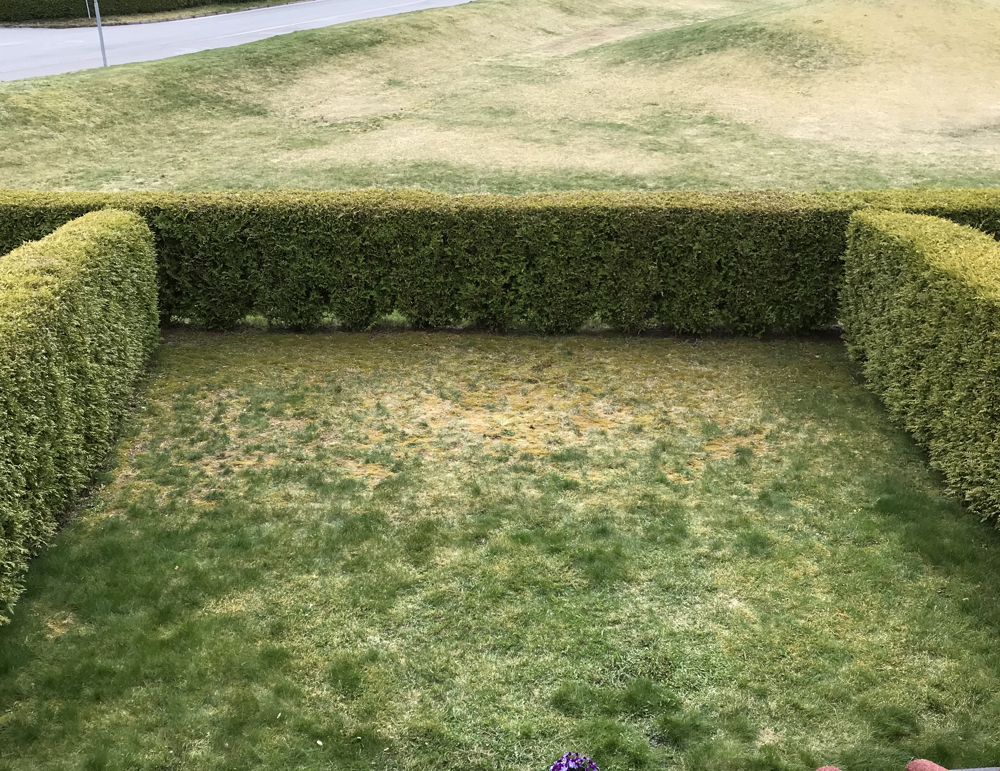
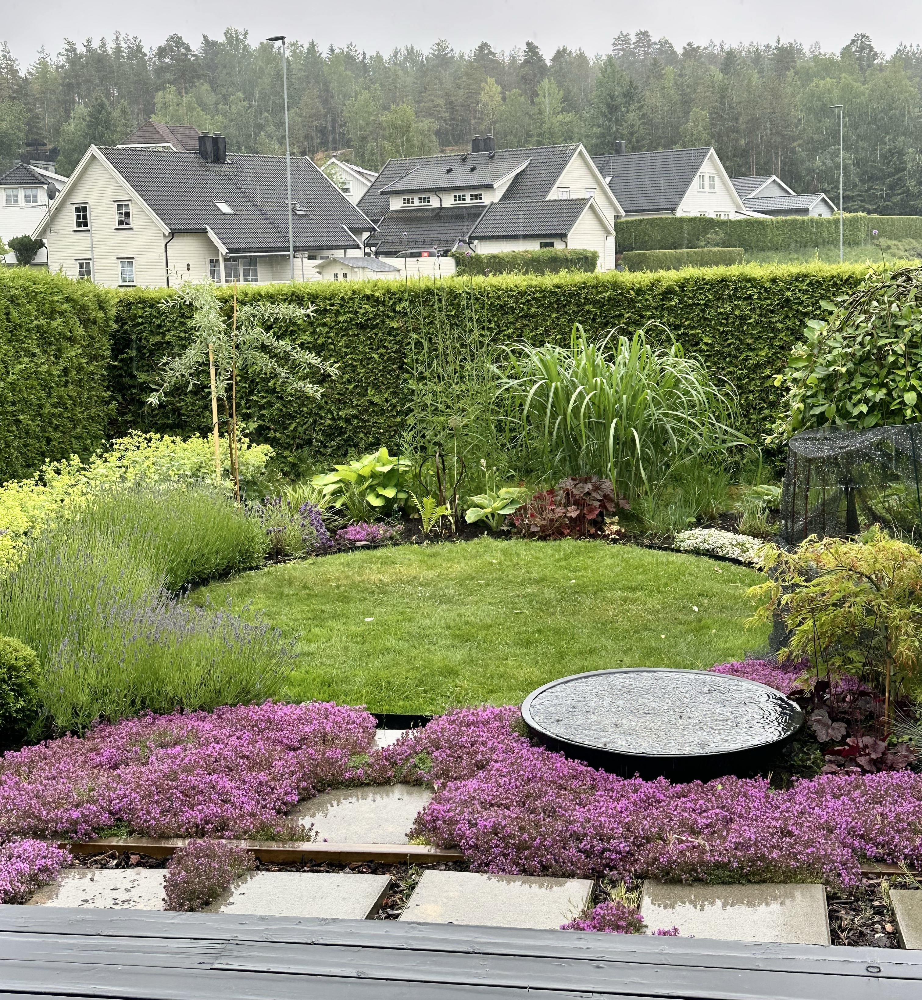
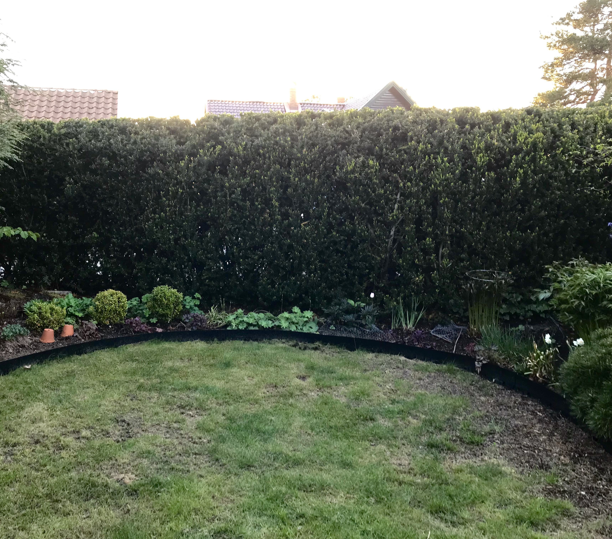
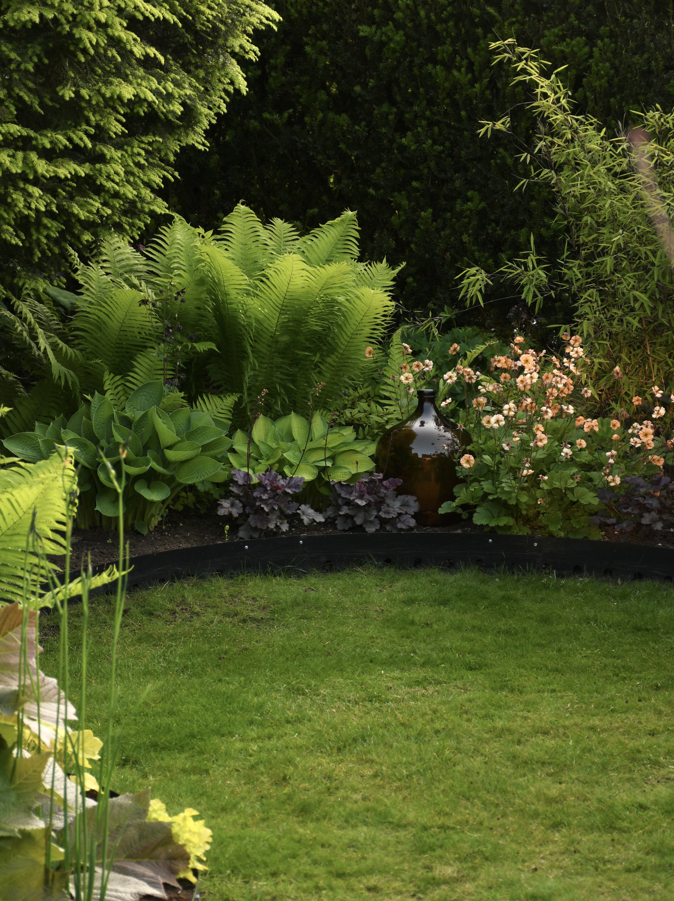
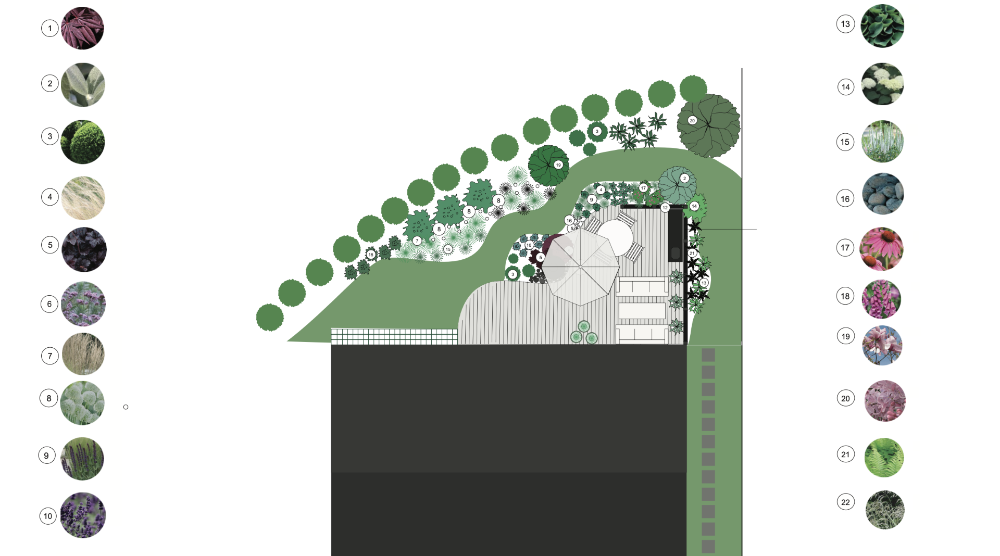

Prosjekter
Her kan du lese om noen tidligere prosjekter utført av Grønn form
Rekkehushage i Sarpsborg
Bilder før og etter i en hage designet av Grønn form. Utfordringen her var en plen bestående av nesten bare mose, og derfor valgte vi å bare ha gress på et veldig lite område som har nok sol i løpet av dagen. Resten av hagen ble en blanding av stauder, vintergrønne planter og noe små trær. Blomstringen er nå flott fra tidlig vår og det summer av humler og vrimler av sommerfugler - i kontrast til hvordan det var tidligere. Oppdragsgiver var i 70 årene, hadde flyttet fra stor villa, og ønsket en frodig hage det var overkommelig å stelle. Med store stuevinduer ut mot hagen er dette i dag en oase som er flott å se på fra både stuen og terrassen, og arbeidet med vedlikehold føles fortsatt overkommelig og givende.


Fra problemområde til frodig oase
Skyggefulle områder i hagen kan fort oppleves som et problem. Ofte kan planter sture og ikke utvikle seg helt som man hadde sett for seg. For å lykkes med disse områdene er det viktig å velge planter tilpasset forholdene. Dette bedet har blitt utvidet litt for å få plass til flere lang med planter innover. Det har fått en variasjon i bladformer og det er ulike høyder og størrelse på plantene. Her blomstrer det fra tidlig i mai og til langt ut på høsten, og fargeuttrykket endrer seg i løpet av sesongen. Bedet har gått fra å være monotont og kjedelig med planter som mistrivdes til å bli det frodigste stedet i hele hagen.


Fornying av hage i Kristiansand
Hage i Kristiansand er tegnet på distanse, og her har hageeier valgt å bestille tegnearbeidet i flere etapper – dette var trinn 1. Med utgangspunkt i teams møter, kartgrunnlag og hageeiers ønsker ble det tegnet et forslag til hageplan for et område av denne hagen. Platting er laget med myke linjer og det samme er kantene på bed ved plattingen. I ytterkant var det allerede en hekk, så jobben bestod i å forme området mellom hekk og husvegg med fokus på en hyggelig uteplass. Beplantningen langs plattingen skal være med på å myke opp overgangen mellom tredekket og plenen.
